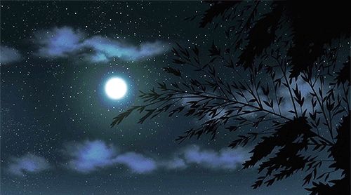

Filha, deixa eu te contar um pouco sobre quem foi a sua mãe antes de tudo isso.
Eu me chamo Mazzi Ferland.
Cresci em uma família bastante comum, daquelas que talvez passem despercebidas na rua, mas que guardam dentro de casa um tipo de amor silencioso e constante. Fui criada com carinho, responsabilidade e um senso muito forte de ética e cuidado. Meus pais sempre fizeram o possível e muitas vezes o impossível para me oferecer o melhor que podiam. Dentro das nossas limitações, eles me prepararam para o mundo da melhor forma que sabiam: com atenção, diálogo, e uma educação que não se aprende nos livros, mas sim na convivência.
Essa base me deu estrutura. Com ela, eu consegui enfrentar os primeiros desafios da vida sem desabar, fosse na escola, em ambientes sociais ou até no mercado de trabalho. E posso confessar? Se tem uma característica sua que eu reconheço como herança direta da sua velha aqui é essa capacidade incrível de se adaptar, de se jogar nas coisas e aprender com rapidez. Você tem uma sede de aprender que me emociona, e me lembra muito quem eu fui um dia.
Não estou dizendo isso para me gabar, nem para tentar provar alguma coisa. Só quero te mostrar que antes de ser mãe, antes de todas as quedas e recomeços, eu fui uma jovem determinada. Dos meus tempos de escola até os 18 anos, fui aquela aluna que todo professor conhece pelo nome, e não só porque era dedicada, mas porque realmente me esforçava para ser a melhor. Tirava notas altas, estudava por conta própria, gostava de aprender. E isso, com o tempo, começou a abrir portas.
Aos 20 anos, entrei no mercado financeiro. Comecei como gestora de risco em uma empresa de grande porte, um universo onde as pessoas costumam duvidar da capacidade de uma mulher jovem logo de cara. Mas não demorou muito para que eu conquistasse meu espaço. Minha habilidade em avaliar cenários, prever riscos e propor soluções me fez ser reconhecida rapidamente. Era puxado, mas era gratificante.
E foi nesse contexto, em meio a planilhas, reuniões, pressões e relatórios intermináveis que conheci o seu pai.
Era um daqueles dias infernais no trabalho. Mil tarefas acumuladas, prazos estourando, e a minha cabeça já fervilhando. Eu andava rápido pelos corredores da empresa, absorta nos próprios pensamentos, quando esbarrei com alguém. Ele vinha na direção oposta, carregando uma pilha desorganizada de papéis e documentos. No fim, o inevitável aconteceu: acabamos nos esbarrando um no outro.
Os papéis voaram. Alguns flutuaram como folhas de outono antes de tocar o chão. E o silêncio que se seguiu durou só alguns segundos, porque logo veio aquela enxurrada de reações: resmungos abafados, um pouco de raiva disfarçada, e uma troca meio atrapalhada de desculpas.
De primeiro momento, eu acabei seguindo meus passos, ainda determinada á resolver meus problemas e, também, os da empresa como um todo, deixando seu pai para trás para se virar com aquela papelada toda, um erro meu que acabou sendo acarretado mais pela emoção do que pelo raciocínio.
Bem, depois que eu consegui resolver tudo com uma maior facilidade do que eu esperava, eu chamei seu pai em um horário acessível longe do trabalho para me desculpar com ele pelo ocorrido, conversar com mais calma para resolver o que poderia ter sido evitado.
Felizmente, aquele início meio atrapalhado entre mim e seu pai teve um desfecho positivo. Não só conseguimos resolver o mal-entendido como também aproveitamos aquele momento inesperado, quase como uma “reunião privada improvisada” para conversar com mais calma. Foi ali, naquele intervalo entre desculpas e risos constrangidos, que começamos a nos entender de verdade. Inclusive, foi nele que descobri seu nome: Kyran Vestergaard.
Na época, seu pai tinha cerca de 22 anos. Era jovem, como eu, e embora tivesse seus momentos de desajeito e demonstrasse, vez ou outra, uma frustração silenciosa com a vida ou consigo mesmo, havia nele uma doçura inegável. Ele era inteligente, atento aos detalhes e, acima de tudo, alguém cuja presença trazia uma estranha e reconfortante sensação de paz. Nós nos compreendíamos. Às vezes sem nem precisar dizer nada. E é justamente esse tipo de conexão que, com o tempo, transforma qualquer relação em algo mais profundo.
A partir daquele dia, nos tornamos praticamente inseparáveis. Não havia uma manhã em que nossos caminhos não se cruzassem no escritório, nem uma tarde sem pelo menos uma conversa despretensiosa, daquelas que começavam com assuntos banais e terminavam em risadas espontâneas e confidências inesperadas. Com ele, eu podia respirar. Podia rir com leveza, esquecer o peso das responsabilidades e, por um instante, apenas estar ali, presente e feliz.
E então, inevitavelmente, aconteceu o que costuma acontecer quando duas pessoas se encontram de verdade: o sentimento cresceu. Um dia, ele criou coragem e me chamou para sair. Foi uma cena cômica, eu lembro como se fosse ontem. Apesar da personalidade forte que ele sempre demonstrava no trabalho, naquele momento, ele parecia um menino inseguro: mãos suadas, voz trêmula, tropeçando nas próprias palavras, cada sílaba apresentando um desafio. Era adorável.
E eu, claro, aceitei na hora. Ele sugeriu um restaurante que, coincidentemente, ou talvez propositalmente, era o meu favorito. Um lugar aconchegante, com luz baixa e comida reconfortante. Só de perceber que ele tinha se atentado a esse detalhe, que tinha escolhido um lugar pensando em mim, meu coração se aqueceu. Aquilo dizia muito sobre quem ele era, ou, pelo menos, sobre quem ele parecia ser naquela época.
Lembro-me com nitidez do instante em que percebi que a hora havia chegado. Eram exatamente 19h, e, apesar de tentar manter a compostura, a ansiedade tomava conta de mim, aquela inquietação típica de quem vai a um primeiro encontro com alguém que já ocupava espaço demais no pensamento.
Minha mente não parava: “Será que estou bonita o suficiente?”, “Será que ele vai gostar do meu vestido?”, “Exagerei na maquiagem?”, “E se ele achar que eu estou forçando demais?”. Era um bombardeio de dúvidas silenciosas, daquelas que fazem a gente andar de um lado para o outro, tentando, em vão, afastar a ansiedade.
Mas a verdade é que esse tipo de ansiedade só se resolve de um jeito: encarando. Então respirei fundo, me olhei no espelho uma última vez e disse a mim mesma: “Tá bom, Mazzi. Você consegue, vai que é sua.” E fui. Fui com o coração acelerado, mas determinada.
Cheguei ao restaurante e, para minha surpresa, ele já estava lá, pontual, parado próximo à entrada.
E, filha... naquele momento, acho que nunca vi ninguém tão bonito na minha vida.
Ele estava absolutamente deslumbrante. Os cabelos impecavelmente penteados, os olhos atentos, o terno caindo sobre ele com uma elegância que parecia ensaiada. Ele não era apenas bonito, era hipnotizante. Ao ponto de parecer roubar a cena do próprio ambiente ao redor.
Fiquei tão absorta naquela imagem que me perdi por alguns segundos. Meus olhos se fixaram nele, e tudo ao redor parecia desacelerar até que ele sorriu e disse meu nome. Despertei do pequeno transe com uma mistura de vergonha e encanto, aquele tipo de cena que depois rende risadas, mas no momento deixa a gente levemente corada.
E então ele me olhou com ternura e disse, com a voz baixa e gentil:
"Meu Deus, Mazzi, você tá linda! Uma verdadeira princesa! Como pode alguém ter tanta beleza assim?"
Meu coração aqueceu. Aquelas palavras foram simples, mas ditas com tamanha sinceridade que me deixaram sem chão. Um turbilhão de emoções tomou conta da minha cabeça, e não era confusão, não era nervosismo. Era algo bom. Muito bom. Era o tipo de sentimento que não se traduz bem em palavras, mas que você sente no corpo todo. Era amor, ainda que talvez a gente não tivesse nomeado isso ainda.
Entre risadas contidas e o rosto quente, respondi o que consegui pensar na hora:
“Talvez eu só tenha me inspirado no melhor, né?”
Não sou exatamente uma mestra em flertes, mas foi o que saiu, e ele pareceu gostar. Ele riu, demonstrando que aquele simples gesto já havia sido suficiente. E de fato, era o bastante.
Entramos no restaurante, ainda rindo, ainda nos olhando com aquele brilho de novidade, e então começou algo que, na época, eu nem imaginava a proporção que teria. A noite foi maravilhosa. O lugar, como de costume, era lindo, moderno e ao mesmo tempo acolhedor, e a comida... perfeita. Mas o que realmente importava era a companhia. Conversamos sobre tudo, nossas vidas, nossos gostos, nossos sonhos, nossos medos. Houve ali um tipo de entrega silenciosa, cada palavra se encaixando perfeitamente na outra, como parte de um quebra-cabeça natural.
E é claro que a noite não acabou ali.
Seu pai, sempre atento, sugeriu que estendêssemos um pouco mais aquele momento. Um passeio, uma caminhada, talvez só mais um tempo juntos antes que o mundo voltasse a nos puxar de volta para a rotina. E eu, claro, não resisti à ideia. Na verdade, nem queria. Tudo dentro de mim queria permanecer ao lado dele por mais algumas horas ou, quem sabe, por muito mais do que isso.
Seu pai me levou para tantos lugares bonitos.
Lugares que não eram apenas espaços físicos, mas pequenos refúgios onde a mente podia descansar, vagar em silêncio ou se perder nos detalhes da paisagem. A maioria dessas trilhas ficava em áreas um pouco afastadas da cidade, cercadas por árvores antigas, cheiros de mato e aquela brisa fresca que só quem caminha devagar consegue sentir. E, ah, as vistas. Eram simplesmente inesquecíveis.
Tinha uma em especial, no topo de uma colina, onde pude imaginar o pôr do sol se debruçar sobre a gente com todo o cuidado do mundo. Cores alaranjadas, vermelhas e douradas se misturando no céu como uma aquarela viva. Até hoje, por mais que eu tente — e acredite, já tentei — não consigo apagar aquelas imagens da minha memória. A paisagem ficou impressa em mim, não apenas nos olhos, mas na alma. E eu juro, minha pequena, se você estivesse ali comigo, teria se apaixonado por aquele lugar também. Era do tipo de paisagem que conversa com a gente sem dizer uma palavra.
Ele me surpreendeu com ingressos para um show. Nada muito grandioso, nada de artista pop das paradas internacionais, mas ainda assim algo especial. O cantor não era exatamente famoso, mas também não era um completo desconhecido. A julgar pela energia contagiante da plateia, ele já tinha um público fiel que conhecia cada letra.
E nós? Bom, nós entramos no ritmo.
Dançamos sem pensar no mundo lá fora. Pulamos, rimos, nos deixamos levar pelo som. Mas, entre nós duas aqui, deixa eu te confessar uma coisinha: lembra quando eu disse que dançamos e cantamos muito? Então, eu talvez tenha exagerado um pouco. Dançar, sim, isso eu fiz. Agora cantar.. digamos que esse nunca foi o meu talento mais afiado, haha.
Mas seu pai, ahhhhh, esse era outra história.
Ele parecia conhecer todas, absolutamente todas as músicas do show. Enquanto a plateia cantava os refrões, ele cantava até os trechos mais obscuros, as pontes, os versos rápidos. E cantava bem, com entusiasmo, com alma. Era bonito de ver. Parecia que ele estava revivendo uma parte especial da juventude, memórias que só aquelas melodias poderia resgatar.
E quanto à dança, você sabe. Seu pai sempre teve aquela ousadia simpática nos pés. Era um ótimo dançarino, confiante, expressivo, mas, vez ou outra, a empolgação vencia a coordenação e ele acabava tropeçando ou escorregando. Teve um momento em que ele se empolgou tanto tentando girar que simplesmente caiu no chão, de braços abertos, como se estivesse se entregando ao universo.
Mas tudo bem. Eu estava ali. Sempre estava. Ajudava ele a se levantar com um carinho que não era só físico, mas quase simbólico. Naquele gesto, havia a reafirmação silenciosa de que estávamos juntos, apoiando um ao outro mesmo nas quedas. E ele ria. Eu ria. E tudo virava uma memória doce, dessas que aquecem o coração quando o silêncio da vida adulta pesa demais.
E, por fim, naquela sequência de encontros que pareciam cuidadosamente tirados de um livro que a gente gostaria de reler mil vezes, seu pai me levou para um lugar diferente. Um refúgio silencioso, afastado da cidade, longe dos postes de luz e da pressa do mundo moderno. Um daqueles lugares onde o tempo parece desacelerar só pra te dar uma chance de respirar mais fundo.
A ideia? Simples, mas profundamente significativa: observar o céu estrelado.
Você já se deitou na grama só pra se perder um pouco nas estrelas, Miska? Tenho quase certeza de que sim. É o tipo de coisa que a gente faz sem pensar muito — às vezes para fugir da bagunça do dia, às vezes só pra se permitir um instante de silêncio. E quando a gente menos espera, se vê ali, hipnotizada por aquelas pequenas luzes tremeluzentes e á beleza absurda daquele espaço infinito.
E então, enquanto eu dividia o silêncio com seu pai, algo mudou.
Enquanto observávamos aquele mar escuro cravejado de luz, ele apontou para duas estrelas em particular. Eram mais brilhantes que todas as outras, quase irmãs, tão próximas e intensas que pareciam querer dizer alguma coisa só para nós dois. Foi então que ele disse:
"Elas são lindas, né? São tão brilhantes quanto você."
Não foi um verso de poesia. Não foi uma frase ensaiada. Foi simples. Honesta. E por isso mesmo, profundamente romântica. Olhei pra ele e, em silêncio, sorri. Porque naquele momento, não havia o que dizer, só sentir.
Mas mesmo assim, as palavras vieram, suaves:
“Se eu pudesse, te daria todas as estrelas do céu.”
Ele sorriu de volta. Aquele sorriso que só quem ama reconhece de longe. Era cálido, doce, e cheio de significado. Um daqueles sorrisos que não se vê com os olhos, mas com o peito.
E foi ali que nos beijamos pela primeira vez.
Não foi só um beijo. Foi um gesto que selou não apenas os nossos lábios, mas tudo o que vínhamos cultivando até então, o afeto, o cuidado, o desejo, a admiração. Foi um beijo demorado, sereno, e ao mesmo tempo intenso. Um beijo que disse tudo sem precisar de mais nenhuma palavra.
Quando nos afastamos, eu estava em transe. Me sentia atravessada por uma mistura de sensações: felicidade, euforia, uma pontinha de medo, desejo. Mil pensamentos cruzavam minha mente ao mesmo tempo, agitando-a de uma só vez, mas, no fundo, nenhum deles importava.
Porque naquele instante, eu entendi: não havia mais nada a ser pensado. Era só viver. Estar ali, ao lado do seu pai, era o que bastava.
Era tudo o que precisávamos.
Quando decidimos que era hora de ir embora, eu e seu pai nos levantamos lentamente. Antes de dar o primeiro passo em direção ao carro, olhamos juntos para o céu mais uma vez, nosso pequeno ritual silencioso, como uma despedida sagrada.
Lá estavam elas: as duas estrelas brilhantes, imóveis e intensas, parecendo nos observar de volta. Naquele momento, senti que elas refletiam nossa própria cumplicidade, como versões celestes de nós dois, firmes, alinhadas e cúmplices.
Mas aí algo diferente aconteceu.
Entre aquelas duas estrelas que já havíamos adotado como nossas, surgiu uma terceira. Pequena, tímida, mas com um brilho próprio. Parecia ter acabado de nascer ali, no meio delas, também querendo fazer parte daquela constelação inventada só por nós.
Seu pai, claro, não perdeu a chance de transformar o momento em piada. Franziu a testa, carregando no rosto o ar de uma infância fingida, e com aquela voz exagerada, cheia de teatro, soltou:
“Ahhh, que saco! Um intruso no nosso barato!”
Na hora, eu ri. Foi inevitável. Ele sempre teve esse talento de aliviar qualquer silêncio com um toque de comédia boba, daquelas que só funcionam quando se está apaixonada.
Mas enquanto eu ria por fora, por dentro… algo mudava.
Ao encarar aquela pequena estrela solitária, uma sensação estranha tomou conta de mim. Não era medo, nem exatamente desconforto. Era uma inquietação doce, como se uma voz silenciosa sussurrasse no fundo da minha consciência. Palavras que eu não conseguia traduzir, mas que ecoavam mesmo assim.
Um pressentimento mudo, daqueles que a gente sente antes de entender.
E foi aí que a pergunta se formou, como uma névoa que não se dissipava:
Quem era aquela estrelinha?
← Retornar Prosseguir →